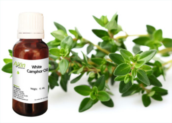

CAMPHOR'S BENEFIT IN DAILY LIFE
Cough
Camphor is FDA-approved as a chest rub in concentrations less than 11%.
Pain
Camphor is FDA-approved for use on the skin as a painkiller in concentrations of 3% to 11%. It is in many rub-on products for cold sores, insect stings and bites, minor burns, and hemorrhoids.

Skin itching or irritation
Camphor is FDA-approved for use on the skin to help itching or irritation in concentrations of 3% to 11%.
Osteoarthritis
A rub-on cream containing camphor, glucosamine sulfate, and chondroitin sulfate seems to reduce the severity of symptoms of osteoarthritis by about half. Researchers believe it is probably the camphor, not the other ingredients, that relieves the symptoms.
Toenail fungus (onychomycosis)
Preliminary research suggests that camphor, in combination with lemon eucalyptus oil and menthol, applied to the toenail area, might be useful for treating toe nail fungus. Applying chest rub products containing camphor such as Vicks VapoRub to affected toenails daily until the infected nail grows out appears to clear fungal nail infections in some people.

Low blood pressure after standing up
Early resrach suggests that taking a specific product containing camphor and hawthorn (Korodin-Herz-Kreislauf-Tropfen) by mouth helps prevent big drops in blood pressure upon standing. However, it is not clear if taking camphor alone provides the same benefits, and this product is not available in the US.

Warts
Warts are growth of tissues on the skin. They are caused by the human papillomavirus virus (HPV). Unfortunately, they can spread to nearby areas and even infect the genital areas (genital warts). We can use camphor oil for treat Warts. Apply the oil to the wart twice daily and cover with a bandage.

Hemmorrhoids
Camphor can be use for treat internal and external hemmoroid. The patient need to lie flat in the bed using no pillow and put one drop of the oil on the belly button. Lie flat for 30 minuites and then wipe the oil off with a tissue. Then the hemmorhoid inside and outside will be gone with one treatment like this.
Use for Other Therapies
Camphor is known to stimulate the digestive system and improve digestion, as well as stimulate blood circulation and the nervous system. Camphor internal use is considered unsafe. However, some people use it internally to treat conditions such as hysteria, anxiety, neuralgia, cough, and intestinal gas. The internal use of camphor can cause serious side effects, including death.